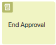
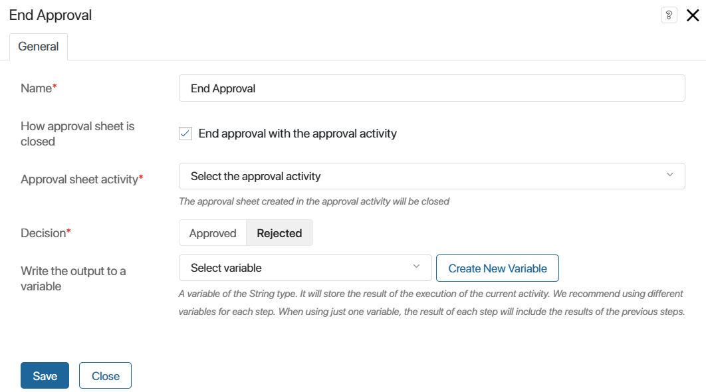
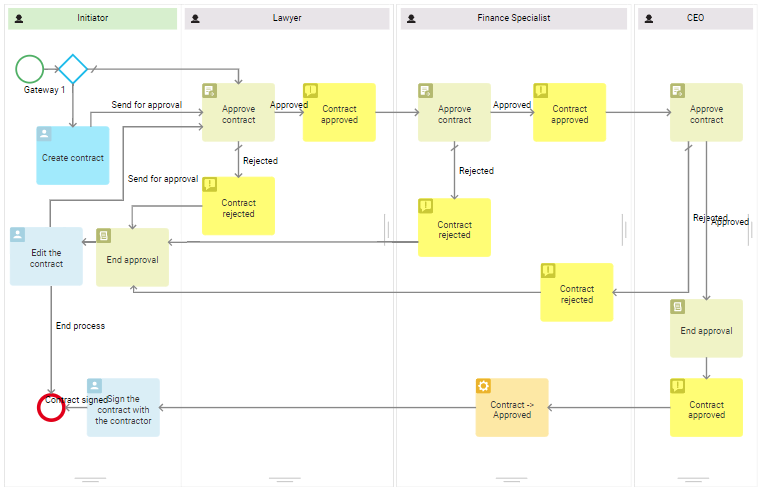
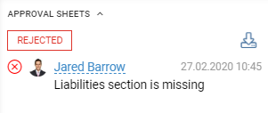

The End Approval activity is used as an auxiliary element for the Approval block. It is placed on the process step where the final resolution on the document should be made. Then users will see the Approved or Rejected status on its page.
Without the auxiliary block, the final result is generated when the process ends. Before that, the page of the app item displays the Pending approval status.
To learn more about modeling the process with the formation of the final resolution after the document review stage, see the Approval use case article.
Set up the End Approval activity
Place the End Approval activity on the process diagram after the Approval activity.
Before configuring an activity, make sure that a variable referring to the approval object: document, file, or app item has been added to the process context.
Double-click on the item in the process diagram to open the settings window. All configuration is done on the General tab:

- Name*. Enter a name that will be displayed in the process diagram.
- How approval sheet is closed*. Select how the approval sheet is selected for closing by enabling or disabling the End approval with the approval activity option:
- When enabled, the sheet created within the selected Approval activity is closed. This allows you to complete a separate stage of approval: to make a decision on only one sheet. For example, it is convenient if two approval tasks are performed simultaneously in the process. When the approval of one activity is completed, you can independently make a decision for it, while the approval sheet for the second activity will remain open. When the approval is completed, the results for each activity can be written into variables to be used in a script or gateway to determine the future course of the process
- When disabled, the sheet to be closed is selected by file or document from the process context. This allows you to close all approval sheets open for a certain object. To do this, specify a context variable referring to the file or app in the Approval object* field.
- Decision*. Use the radio button to select a value. It will be displayed as a decision on the document after the approval is ended.
- Write the output to a variable. Specify a String type variable that will be used to store the output of the current operation:
approvedorrejected. The result depends on the decision made by the approver. You can use this variable to display the approval result on the app form as well as in gateways or scripts when configuring a complex approval logic.
Use the End Approval activity in a process
The diagram below shows an example of using the End Approval activity in a business process.
The lawyer, the finance specialist, and the CEO review the contract one after another. The contract remains in the Pending approval status all the time until it is finally approved.
When the CEO approves the contract, the process flow goes to the End approval activity and the Approved decision appears on the contract’s page. This is necessary because the final step of this process is signing the contract, and it is important to know beforehand if the document was approved or rejected.

We also need to place the End Approval activity before the Edit the contract task. In this case, if an approver rejects the contract and sends it back to the initiator to make corrections, the Rejected decision will appear to the contract's page. When the initiator corrects the contract and sends it for approval once again, the approval sheet with the Rejected decision will be archived. A new approval sheet will be created, and the contract will be marked as Pending approval.
Below you can see how the approval sheet looks when the document is sent back to the initiator for correction.

Found a typo? Select it and press Ctrl+Enter to send us feedback